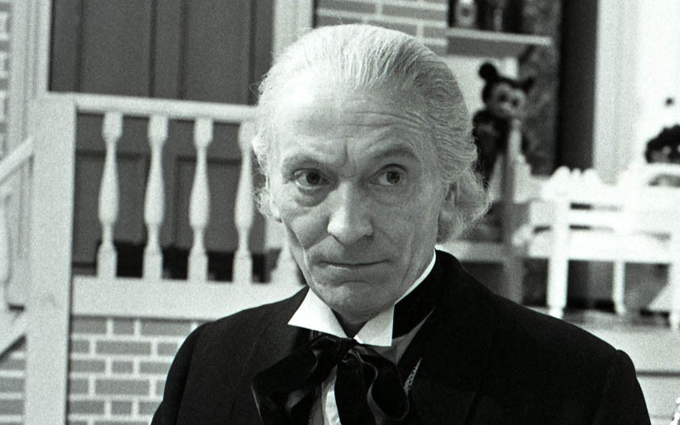
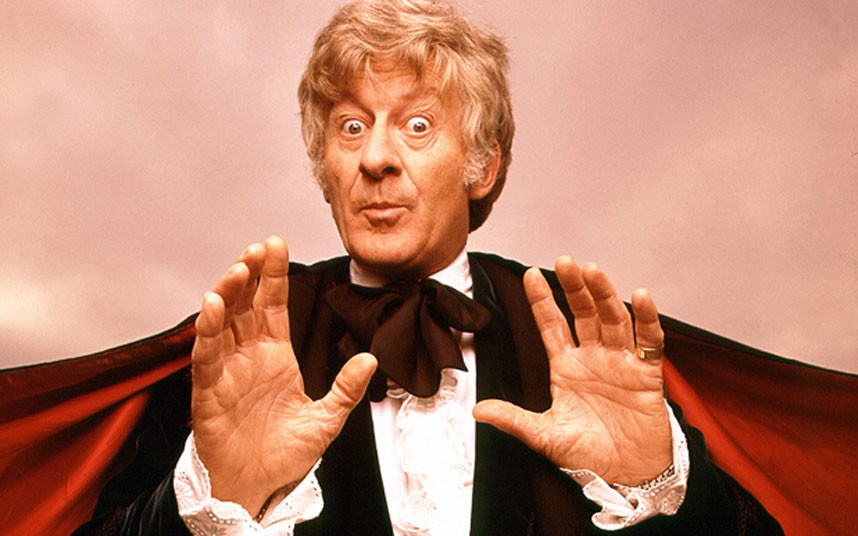
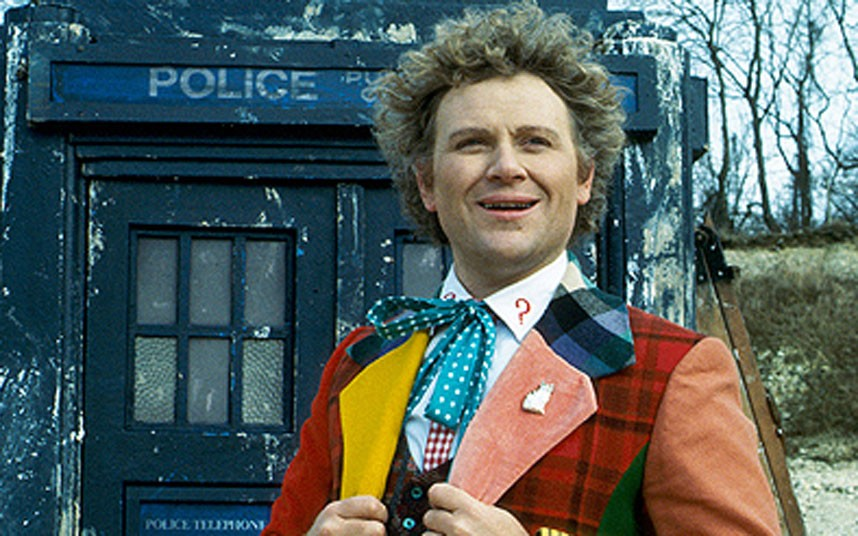
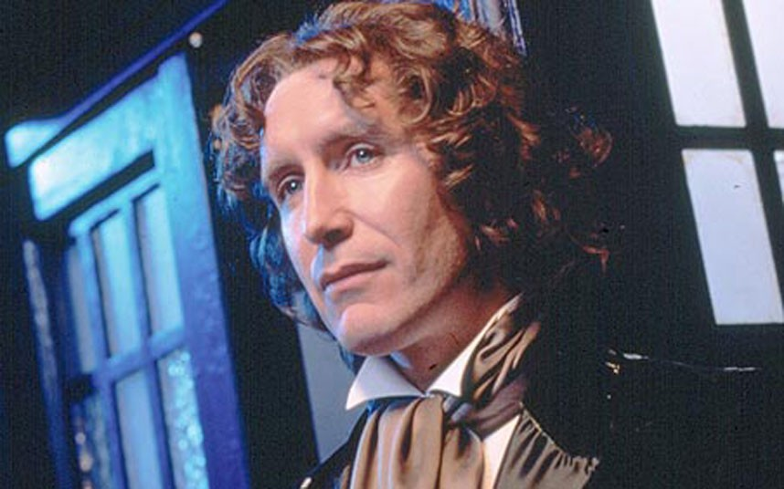
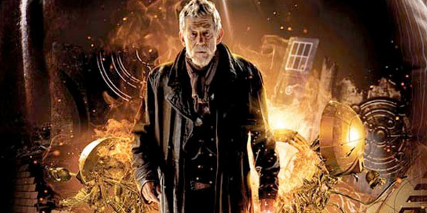
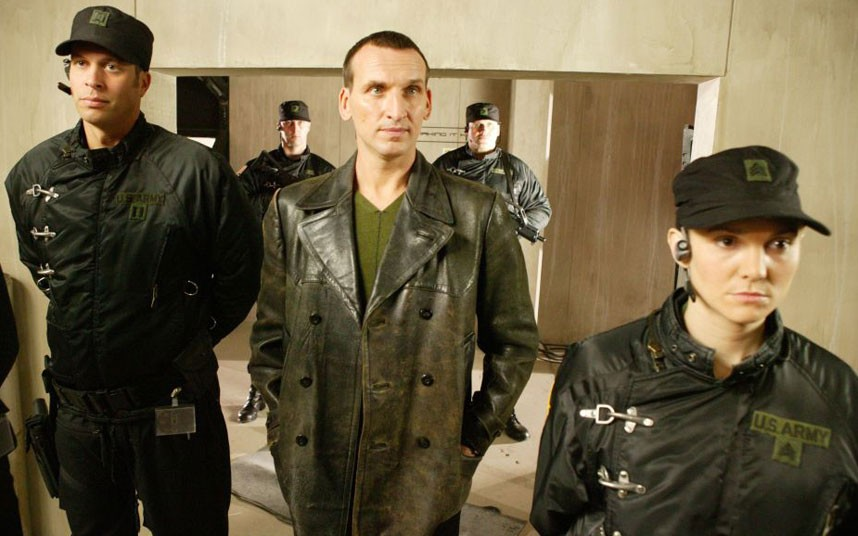
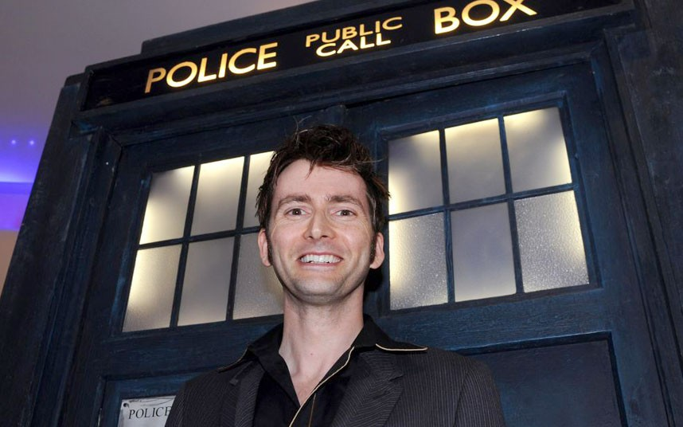
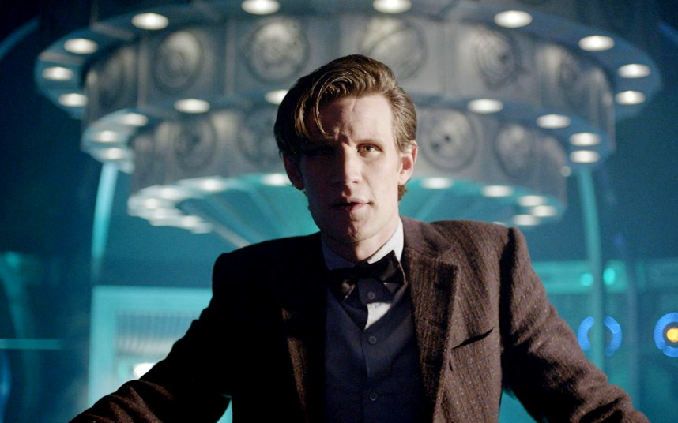

Second
Patrick Troughton
1966 - 1969
Doctor Who is both a television show and a global multimedia franchise created and controlled by the BBC (British Broadcasting Corporation).
It centers on a time traveler called "the Doctor", who comes from a race of beings known as Time Lords. He travels through space and time in a time machine he calls the TARDIS. This ship — which looks like a small, London police box on the outside — has nearly infinite dimensions on the inside. It has become such an iconic shape in British culture that it is currently the intellectual property of the BBC rather than its actual makers, the Metropolitan Police Service.
Since Doctor Who's revival in 2005, its production has been primarily based in Wales by BBC Wales, with its soundtrack regularly performed by the BBC National Orchestra of Wales since 2006.
In order to accommodate cast changes, the narrative allows the Doctor to regenerate into an essentially new person on occasion. The cast is rounded out by one or more "companions", often females. On average, the main cast completely changes once every three or four years — a significant factor in the longevity of the program.
It has had two — some argue three — major production periods. The original run of the program was from 1963 to 1989, and is often called the "classic series" or "classic Doctor Who". A failed revival, in the form of a Universal-BBC co-production, came in 1996 — but the resulting one-off tele movie is often considered a part of the classic series. The current form of the program — sometimes called the "new series" — has been produced by BBC Wales and aired on BBC One since 2005.
Though the classic series is fondly remembered by fans of a certain age, the new series has been far more consistently popular with the British public,[source needed] and is usually the highest-rated scripted drama — outside of perennially popular soap operas — in the weeks that it is on the air.
The franchise spawned by the main television programs includes dozens of distinct ranges of spinoffs in televised, audio and print media.

First
William Hartnell
1963 - 1966
Second
Patrick Troughton
1966 - 1969

Jon Pertwee
Third
1970 - 1974

Fourth
Tom Baker
1974 - 1981

Fifth
Peter Davison
1982 - 1984

Sixth
Colin Baker
1984 - 1986

Seventh
Sylvester McCoy
1987 - 1989

Eighth
Paul McGann
1996

War Doctor
John Hurt
2013

Ninth
Christopher Eccleston
2005

Tenth
David Tennant
2005 - 2010

Eleventh
Matt Smith
2010 - 2013

Twelfth
Peter Capaldi
2014 - Present